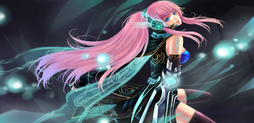

Kyokos feature
-
You can save your own music playlist,
this is an account tied and each user can create their own individual list. - You can delete individual segments of the play list and add new urls.
- You can also specify how many songs can be uploaded to the playlist.
- You can specify the basic setting of the volume.
Say how loud the bot should be in the overall attitude. - It is possible to specify a bot name. This will be applied to all bot messages.
- You can display a emoji play bar,
with emoji'`s that you have self-esteemed and uploaded or used by made template this is present in the images. - You can specify the bot channel,
so in wich channel the bot is bound. - You can have the help and your favorite list sent privately or you can play in the bot channel.
